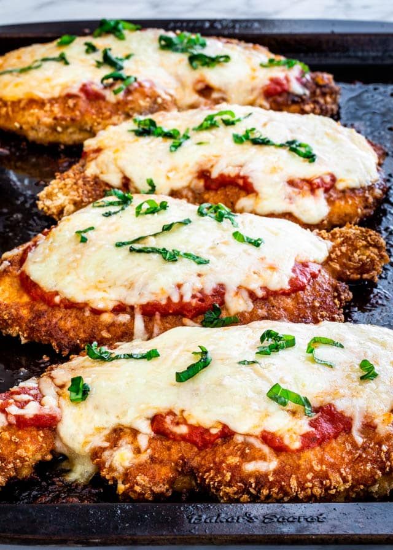

Chicken Parmesan

Chicken Parmesan is no doubt the most popular non-pasta dish in Italian-American style restaurants.
And while this delicious meal may seem fancy, it's actually pretty easy to make at home.
Ingredients
- 4 chicken breasts, about 8 oz each, sliced in half lengthwise to make 8
- 3/4 cup seasoned breadcrumbs, I used whole wheat, you can also use GF crumbs
- 1/4 cup grated Parmesan cheese
- 2 tbsp butter, melted (or olive oil)
- 3/4 cup reduced fat mozzarella cheese, I used Polly-o
- 1 cup marinara
- cooking spray
Instructions
- Preheat oven to 450°F. Spray a large baking sheet lightly with spray.
- Combine breadcrumbs and parmesan cheese in a bowl. Melt the butter in another bowl. Lightly brush the butter onto the chicken, then dip into breadcrumb mixture. Place on baking sheet and repeat with the remaining chicken.
- Lightly spray a little more oil on top and bake in the oven for 25 minutes.
- Remove from oven, spoon 1 tbsp sauce over each piece of chicken and top each with 1 1/2 tbsp of shredded mozzarella cheese.
- Bake 5 more minutes or until cheese is melted
Back To Home Page